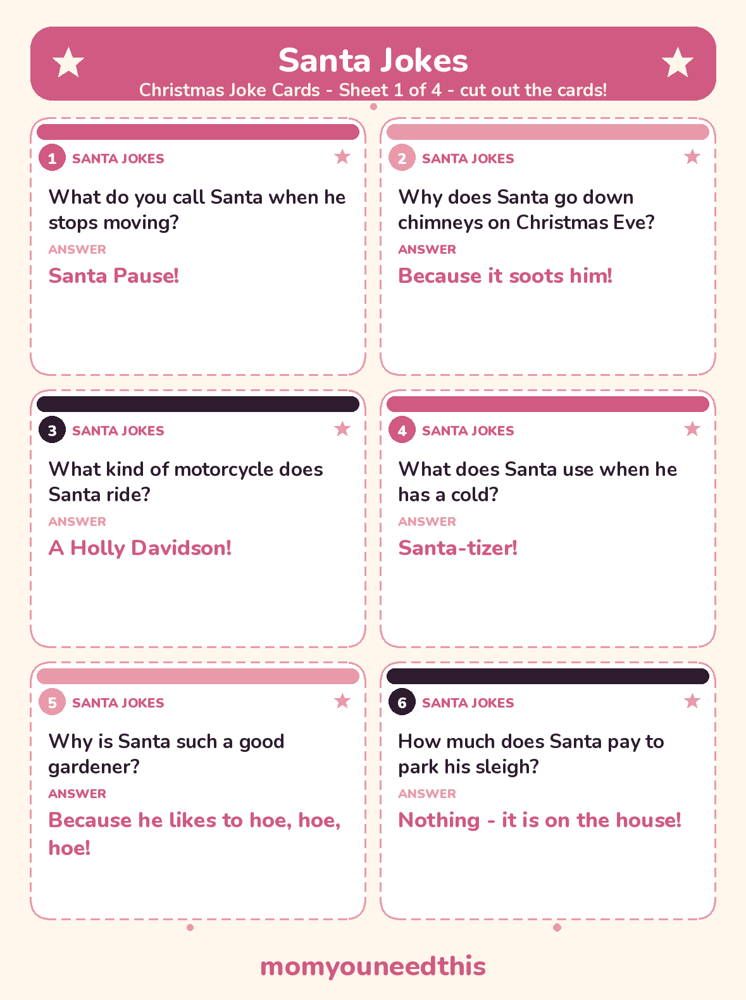
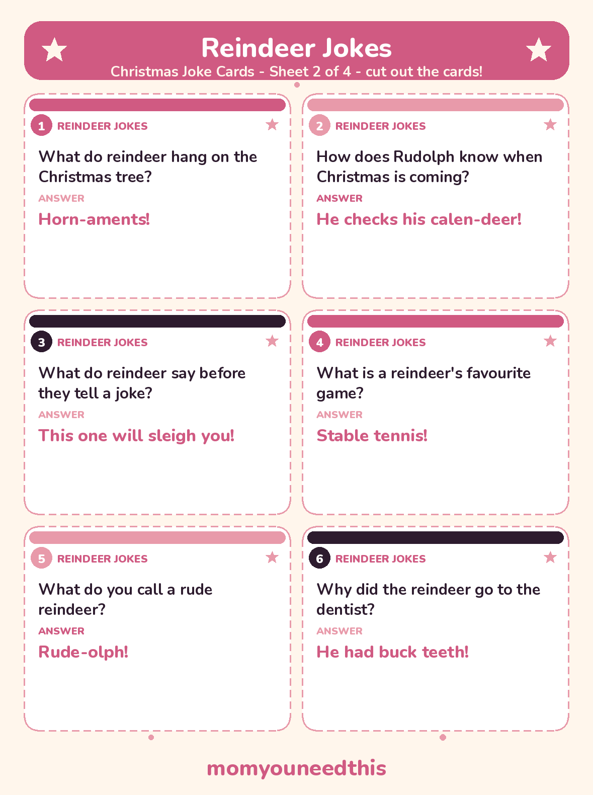
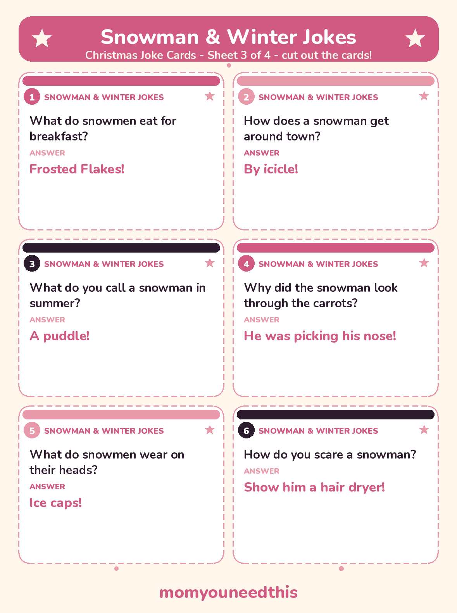
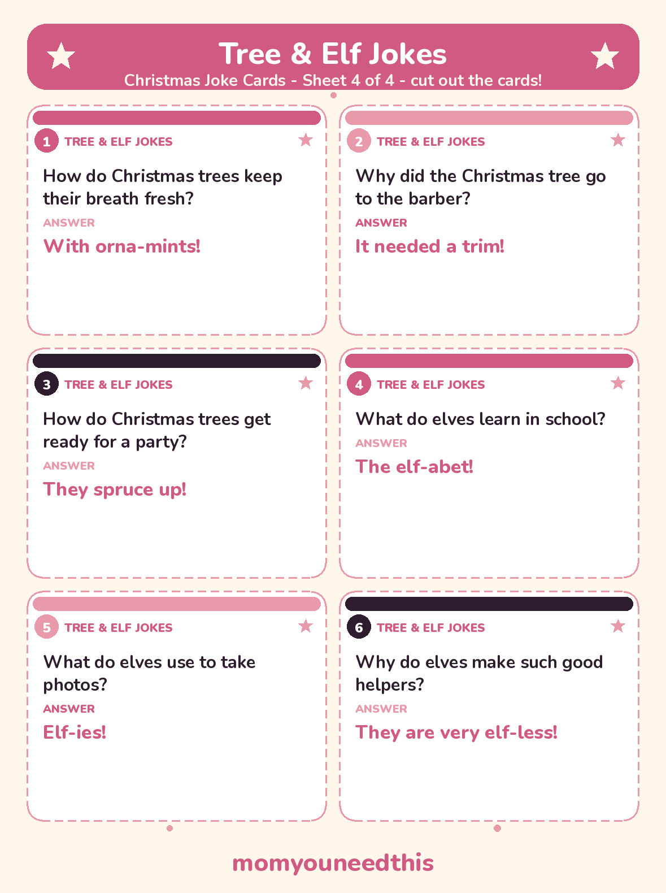

Christmas Jokes for Kids 40 Clean Santa, Reindeer & Snowman Jokes That Actually Land
Forty clean christmas jokes written out in full — Santa's sleigh, Rudolph's nose, snowmen who pick their own noses, and elves who learn the elf-abet. Every joke is short, gentle and easy for a 4- to 10-year-old to memorize, retell at dinner, and get a real laugh with.
Last updated: October 25, 2026
Quick Answer
These christmas jokes are written for kids ages 4 to 10: 40 clean question-and-answer jokes about Santa, his reindeer, snowmen and elves, with no teasing and nothing scary. Read them online, or print 24 of them as cut-out joke cards — perfect for lunchboxes, advent calendars and family dinner.
At a Glance
- Jokes: 40, in 4 groups
- Ages: 4–10
- Printables: 4 joke card sheets (6 jokes each, 24 jokes)
- Content: Clean — no teasing, no potty humour, nothing scary
- Skills: Memory, timing, word play, reading confidence
- Cost: Free — print at home
🎅 Christmas Jokes About Santa
The big man carries these the way he carries presents — one for every chimney. Santa Pause and the Holly Davidson are the two kids request on repeat.
What do you call Santa when he stops moving?
Santa Pause!
Why does Santa go down chimneys on Christmas Eve?
Because it soots him!
What kind of motorcycle does Santa ride?
A Holly Davidson!
What does Santa use when he has a cold?
Santa-tizer!
Why is Santa such a good gardener?
Because he likes to hoe, hoe, hoe!
How much does Santa pay to park his sleigh?
Nothing — it is on the house!
What do you get if Santa goes down a chimney with a fire lit?
Crisp Kringle!
What does Santa say at the start of a race?
Ready, set, HO HO HO!
Why did Santa put a clock in his sleigh?
He wanted to see time fly!
What do you call a kid who doesn't believe in Santa?
A rebel without a Claus!
🦌 Reindeer Jokes
Rudolph, Comet and the whole team get their own set — horn-aments, calen-deers, and one very rude reindeer who gives the group its favourite punchline.
What do reindeer hang on the Christmas tree?
Horn-aments!
How does Rudolph know when Christmas is coming?
He checks his calen-deer!
What do reindeer say before they tell a joke?
This one will sleigh you!
What is a reindeer's favourite game?
Stable tennis!
What do you call a rude reindeer?
Rude-olph!
Why did the reindeer go to the dentist?
He had buck teeth!
What do you call a reindeer with no eyes?
No-eye-deer!
What is Rudolph's favourite day of the year?
Red Nose Day!
Why is Rudolph always ready for a photo?
His nose comes with a built-in flash!
How do reindeer clean Santa's sleigh?
They ask Comet — he makes everything sparkle!
⛄ Snowman & Winter Jokes
Frosted Flakes for breakfast, ice-burgers for lunch, and a snowman who picks his own carrot nose. The hair dryer joke gets the biggest gasp every single time.
What do snowmen eat for breakfast?
Frosted Flakes!
How does a snowman get around town?
By icicle!
What do you call a snowman in summer?
A puddle!
Why did the snowman look through the carrots?
He was picking his nose!
What do snowmen wear on their heads?
Ice caps!
How do you scare a snowman?
Show him a hair dryer!
What do snowmen eat for lunch?
Ice-burgers!
What falls in winter but never gets hurt?
Snow!
What kind of ball never bounces?
A snowball!
Why did the snowman name his dog Frost?
Because Frost bites!
🎄 Christmas Tree & Elf Jokes
Trees that spruce up for parties and elves who learn the elf-abet at school. The wrap jokes are the ones older kids in the group claim as their own.
How do Christmas trees keep their breath fresh?
With orna-mints!
Why did the Christmas tree go to the barber?
It needed a trim!
How do Christmas trees get ready for a party?
They spruce up!
What do elves learn in school?
The elf-abet!
What do elves use to take photos?
Elf-ies!
Why do elves make such good helpers?
They are very elf-less!
What did the Christmas tree say to the ornament?
Quit hanging around!
Why was the Christmas tree so bad at knitting?
It kept dropping its needles!
What kind of music do elves love?
Wrap music!
What do you call an elf who sings while he wraps?
A wrap star!
✂️ The Printable Joke Cards
Twenty-four of these christmas jokes are also cut-out cards — the six Santa jokes, six reindeer jokes, six snowman jokes and six tree & elf jokes. Print the four sheets, cut along the dashed lines, and keep a set in a lunchbox, a coat pocket or the dinner-table drawer.

✂️ Download Your Free Christmas Joke Cards — Sheet 1
6 Santa jokes on cut-out cards — sheet 1 of 4.
⬇️ Download Free Joke Cards 🖨️ Print🎁 Free printable for ages 4–10

✂️ Download Your Free Christmas Joke Cards — Sheet 2
6 reindeer jokes on cut-out cards — sheet 2 of 4.
⬇️ Download Free Joke Cards 🖨️ Print🎁 Free printable for ages 4–10

✂️ Download Your Free Christmas Joke Cards — Sheet 3
6 snowman & winter jokes on cut-out cards — sheet 3 of 4.
⬇️ Download Free Joke Cards 🖨️ Print🎁 Free printable for ages 4–10

✂️ Download Your Free Christmas Joke Cards — Sheet 4
6 Christmas tree & elf jokes on cut-out cards — sheet 4 of 4.
⬇️ Download Free Joke Cards 🖨️ Print🎁 Free printable for ages 4–10
🌱 Why Jokes Are Good for Kids
A good joke is a small word puzzle with a laugh at the end. To get the punchline, a child has to hear that one word can sound like another — 'soots' and 'suits,' 'icicle' and 'bicycle' — and that sound play is the same skill that sits underneath rhyming, reading and spelling. Telling a joke out loud adds memory (the setup, in the right order), timing (pausing before the punchline) and the confidence of holding a room for ten seconds. A child who can make the whole table laugh has done real language work — and will happily do it again tomorrow, which is more practice than any worksheet gets.
🖨️ How to Use These Joke Cards
- Run a joke-a-day advent. Cut out all 24 cards, fold one into each day of your advent calendar or a December countdown jar, and let your child read the day's joke aloud at breakfast.
- Hide one in a lunchbox. Slip a card into a lunchbox or coat pocket on school days. The setup faces up — the punchline is the surprise waiting at lunchtime.
- Make it a dinner-table game. Your child reads the setup and everyone at the table guesses before the punchline is revealed. Wrong guesses are half the fun.
- Keep a travelling set. Leave a few cards in the car or at the grandparents' house — a ready answer to long drives, waiting rooms and video calls that need warming up.
🎄 More Christmas Fun for Kids
🤣 Knock Knock Jokes
24 clean knock knock jokes little kids can memorize and tell, with printable cards. Tell a knock knock joke.
❓ Christmas Trivia
Christmas trivia questions for kids — how much does your family really know about the holiday? Play Christmas trivia.
🔍 Christmas Scavenger Hunt
A printable hunt for all the sights of the season, indoors and out. Start the hunt.
🔤 Christmas Word Search
Free printable word searches full of Christmas words for kids. Find the words.
📚 Learning Activities
The full hub of free printable activities for toddlers and preschoolers. Browse activities.
🎨 Free Coloring Pages
Hundreds of free coloring sheets to print for every age. See the coloring pages.
❓ Christmas Jokes FAQ
Are these christmas jokes appropriate for young kids?
Yes — all 40 jokes are clean and gentle: no teasing, no potty humour, nothing scary. They run on word sounds and silly pictures, which is exactly the humour a young child can follow, memorize and retell.
What age are these jokes best for?
The sweet spot is ages 4 to 10. A 4-year-old will love the snowman and Santa jokes and can learn one with your help; by 7 or 8, most kids read the setup themselves, pause for effect, and deliver the punchline like a pro.
Can I print the jokes?
Yes — 24 of the jokes are also on four printable joke card sheets (6 jokes per sheet), free to print at home with no signup. Cut along the dashed lines to make a card set.
How can I use the joke cards in December?
Families use them as a joke-a-day advent — one card per December morning — and tucked into lunchboxes and stockings. Tucking one of the christmas jokes into a Christmas card for a grandparent is a favourite too.
Are the joke cards free?
Yes — the cards and this whole page are free. Print as many sets as you like.